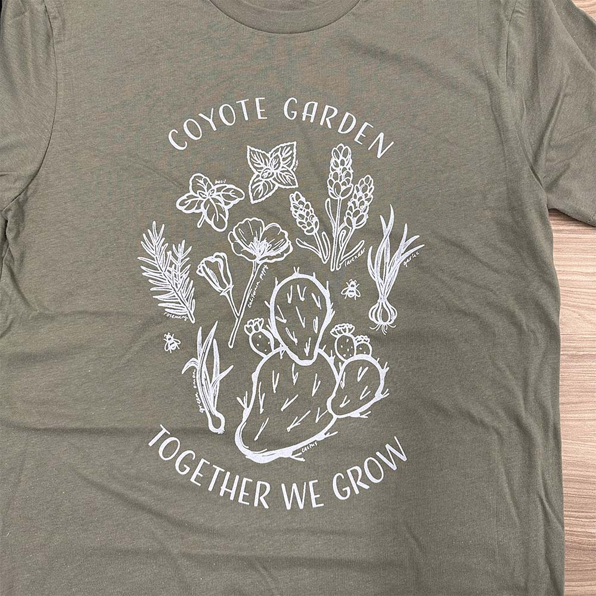

Overview
About ASI
The Associated Students, Incorporated (ASI) serves, empowers, and advocates on behalf of the students at California State University, San Bernardino through the representation of student interests and needs, the inclusion of students in the decision-making process, the execution of premier events and services, and the provision of opportunities for students to be productive leaders of the campus community and beyond.
My Role
From August 2022 to July 2023, I worked part-time on a team of three graphic designers at ASI. Most of my work supported the corporation's marketing and programming efforts. I created a variety of print and digital flyers, as well as designs for promotional items and stickers. For most projects, I worked as the sole designer, but large campaigns required everyone on the graphics team to work together.
My Process
From Graphics Request to Final Deliverable
Every project at ASI began with a graphics request. Clients would fill out our online form, detailing the type of project and any specifications. After receiving their submission, I would follow up for additional details.
I would start my design process my sketching out ideas and creating mood boards. After some feedback from my team, I would create digital roughs and send them to the client for feedback. I would make revisions until we arrived at an approved draft. Then, I would move forward with any additional dimensions, hand off the final files, and update our portfolio. In general, I had a timeline of two weeks per project.
My Work
Media Kits
Since most of our work involved marketing events, I created a lot of media kits. ASI advertises through physical flyers, social media, and digital billboards, so each flyer had to be created in multiple formats and dimensions.
Media kit for the Social Justice Summit.
A standard media kit included four print and four digital flyers. With all of the different sizes, each media kit was an exercise in layout. I always had to think about how my designs would work in both vertical and horizontal orientations.
Promo Items
ASI also markets to students by handing out promo items like T-shirts, hats, tote bags, and water bottles.
Promo items were my favorite type of project at ASI. As designers, we were given more time and freedom to create something that students would really want to wear. In the drafting stage, we would often have polls in the office to gauge popularity and decide on the final design.
My illustration for the Coyote Garden.
Promo items were also special because of how they came to life. As far as deliverables, I only produced a flat illustration. But, I was able to work with our marketer to choose colors and order samples from our manufacturers. And, even though I made mockups to help in our decision making process, opening packages and seeing the real thing was always exciting.
Stickers
We used stickers to incentivize student attendance and leave them with a positive reminder of ASI. Like promo items, we wanted students to love the designs enough to stick them on their laptops and water bottles.
Stickers for Valentine's Day Movie Night.
It was always rewarding to see students' reactions and to spot stickers around campus long after an event was over.
Corporate Design
Although less common, ASI's Board of Directors also had design needs. As the student government of CSUSB, they needed materials that were serious and informative.
Updated Policy Agenda booklet and presentation for the ASI Board of Directors.
With these projects, I followed CSUSB's offical brand guidelines for color palette, typography, and photography.
Reflection
What I Learned
Working at ASI let me take knowledge from my design coursework and apply it in a real work environment.
Asking Questions
Our graphics request form served as a sort of creative brief, but it wasn't enough on its own. It was always important to follow up with questions to clarify the client's vision and needs. During the design process, follow-up questions were also crucial for acquiring meaningful feedback.
Since most projects were internal, this was usually as simple as walking over to the next office and having a conversation. With external projects, it was more common to talk by email or phone.
Working With Uncertainty
Not all questions could be answered right away. Clients didn't always have a vision for their projects, and we had to work together to define a direction.
Other times, project details simply weren't finalized. A project might begin as a T-shirt design and become a sticker design, for example. I had to work with what I did know and adapt as soon as information changed.
Making Design Decisions
Design decisions were influenced by more than what looked good and what students wanted. With internal projects, budget constraints and manufacturing limitations were all factors that shaped my work.
External projects— especially collaborations between ASI and other campus groups— were more complicated. With multiple stakeholders at different levels of investment, things like logo order, logo size, and specific verbiage could really affect the final design.
Polishing the Product
With all of the print work we did, attention to detail was crucial. You can't push an update to the posters on the wall or the flyers in students' hands. Typos happen, dates and locations change, and, sometimes, InDesign decides to chew up one logo on one flyer in your media kit. So, I learned to always give my work a thorough inspection before handoff.
Meeting Deadlines
At the end of the day, the most important thing was to deliver. Graphics had to be completed by a certain date so that we could order prints with enough time to market to students. With ASI being fully funded by student fees, it was especially important to be responsible with our budget. Spending money on rush jobs or events with low attendance would be mishandling student money. To meet deadlines while balancing multiple projects, I organized requests by due date and made sure to prioritize print formats first.
Final Thoughts
Designing at ASI was a great opportunity and learning experience. Along with developing practical skills, I was able to see my designs go from project specifications to production. It was satisfying to practice within an organization, where my work both relied on and supported the work of others. Above all, it was great to experience everything with a team of other designers. Learning from each other, sharing feedback, and collaborating was always rewarding.